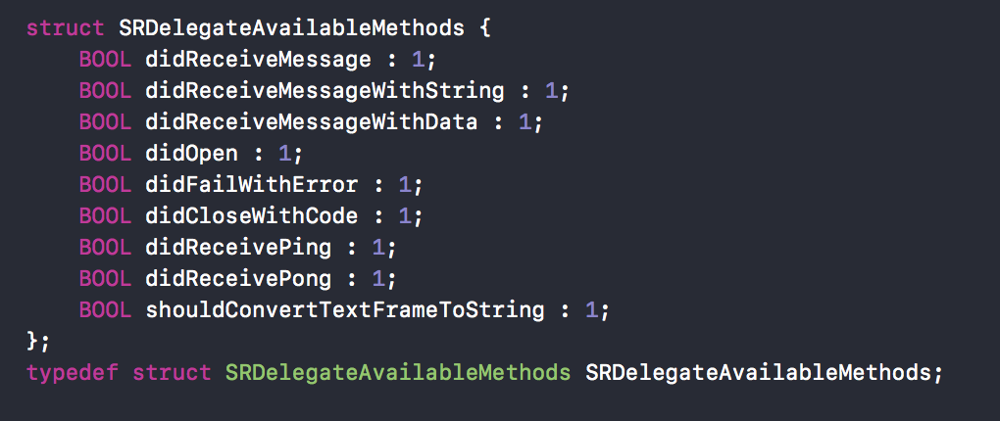
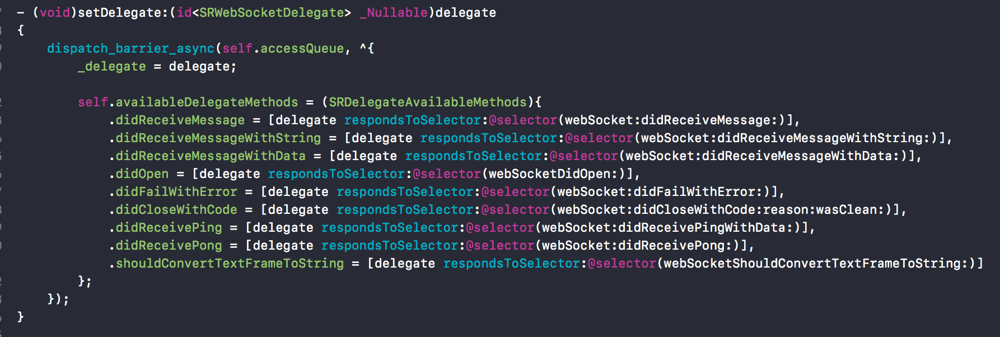

平时工作肯定会遇到delegate的使用，比较常用的UITableViewDelegate、UITableViewDataSource， 有关delegate的特点以及使用可以参考苹果官方文档。
delegate & struct
最近在阅读SRSocketRocket源代码时候发现了一个之前没接触过的方式，代码中为protocol包装了一层，使用struct构建一个对象来标识实现这个协议的对象都实现了哪些方法：


我为此写了一个Demo，简单的介绍了这种新的方式。
Demo
Demo比较简单，三个页面用来区分平时使用方法和这次新的使用方法。
首先定义了一个协议HBDemoProtocol，包含两个接口给要实现者去实现。
|
|
ViewController是APP启动看见的页面，一般实现按钮将页面带入平时使用方式调用页面；包装实现按钮将页面带入这次新方法调用页面。
Origin
定义HBOriginModel对象用来调用HBDemoProtocol的实现。HBOriginViewController VC是平时使用方式，实现HBDemoProtocol。主要代码:
|
|
点击sayHello、sayBye按钮弹出不同的文言。
新的思路
对协议HBDemoProtocol做一个封装对象HBProtocolWrapper，定义结构体标识协议对应的方法:
|
|
这样在调用协议实现时可以这样写:
|
|
HBWrapperViewController 页面与 HBOriginViewController实现上基本一致。
将对delegate操作的代码和附加功能(delegate操作的队列等)做拆分，这样拆分了代码，阅读以及测试起来更加方便。
这是一些阅读源代码的发现，如果你有其它意见或者见解欢迎留言(注意：留言系统是Disqus)或者发我邮箱：honeyeeeb@gmail.com。谢谢！
需要多读一读优秀源代码，O(∩_∩)O~~